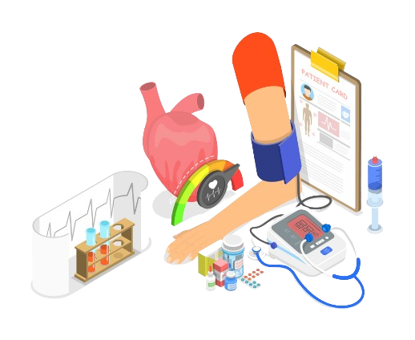
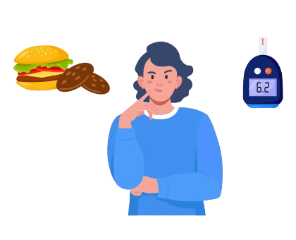

Hipertensi
- Pilih buah-buahan segar, sayuran, daging, dan biji-bijian yang belum diproses karena umumnya rendah sodium
- Bereksperimenlah dengan bumbu dan rempah-rempah sebagai alternatif dari garam
- Gunakan sedikit garam dalam masakan
- Hindari menaburkan garam ekstra dalam makanan
- atasi konsumsi makanan dan bumbu yang sangat asin seperti kecap dan saus tiram


Diabetes
- Mengatur waktu makan
- Distribusikan dan atur porsi asupan karbohidrat sepanjang hari dengan penekanan pada karbohidrat kompleks
- Hindari gula rafinasi seperti gula putih, madu, susu kental, minuman ringan, dll.
- Hindari jus buah dan minuman manis
- tingkatkan asupan serat dengan memilih makanan dan sayuran gandum utuh
- Pilih produk makanan rendah lemak